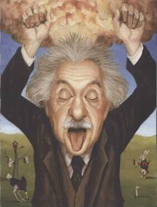
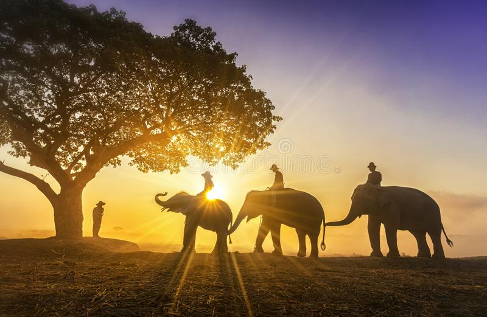
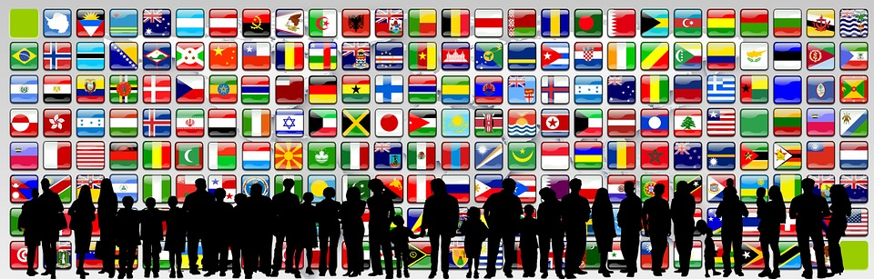
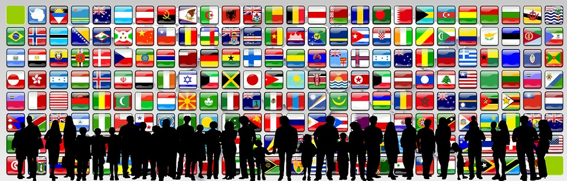

HISTORY
Types of Close Relationships and Associated Ancestral Challenges.Throughout history, humans have faced a set of core ancestral challenges, each of which can be solved by forming different types of relationships. These evolutionary challenges include: (1) mate attraction (e.g., dating couples), (2) mate retention (e.g., married couples), (3) kin care (e.g., family members), (4) coalition formation (e.g., friends), (5) status (e.g., workplace relationships) (see Table 1). Below we discuss how each type of challenge is associated with different kinds of evolutionary opportunities and costs, which have important ramifications for the workings of relationships that help solve difference evolutionary challenges.
PERSONAL RELATIONSHIPS
Dating Couples: Challenge of Mate Attraction Differential reproduction is at the center of natural selection. Hence, decisions about mating are, from a functional perspective, crucially important. There has been an abundance of evolution-inspired research on mate selection. Selecting a mate involves three separable sets of questions: (1) which type of relationship is the partner being considered for (e.g., short-term versus long-term)? (2) what are the characteristics of the potential mate (e.g., his/her physical attractiveness, social status)?; and (3) How does the potential mate’s characteristics meet my desires and needs?” The characteristics desired in a short-term mate are different than those desired in a long-term mate (e.g., Buss & Schmitt, 1993; Fletcher et al., 2004; Li & Kenrick, 2006). Because of differences in obligatory parental investment (with women being required to invest more in potential offspring), men and women differ in their preferences for both type of relationship and the characteristics they desire in a mate (e.g., Kenrick et al., 1990; Shackelford et al., 2004; Wiederman & Hurd, 1999). There are also sex differences in the criteria for mate choice, with women prioritizing status and resources more than men, and with men prioritizing physical attractiveness more than women (Buss, 1989; Kenrick et al., 1993; Li & Kenrick, 2006). Human males and females often cooperate in raising offspring, and raising offspring requires some similar characteristics in men and women (e.g., cooperativeness, generosity, sense of humor, etc.). Consequently, the sex differences in mate selection criteria exist alongside a number of sex similarities (Kenrick et al., 1990, 1993; Li & Kenrick, 2006).
FAMILY RELATIONSHIPS
SOCIAL RELATIONSHIPS
INTERNATIONAL RELATIONSHIPS
 
